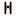
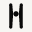
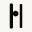
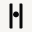
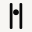
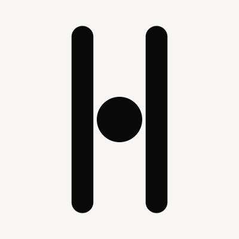
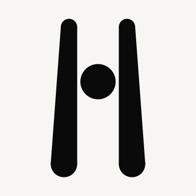
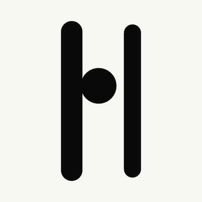

Shipped stadium H is a baseline, not approved. Two members, one suspended sphere, one colour. Source is closest to the board. Flare is the working direction.








Working direction: 2 Flare.
A recovered threshold, not a corporate H. Source stays as the closest one-colour of the board. Production logos unchanged. No Phase B.